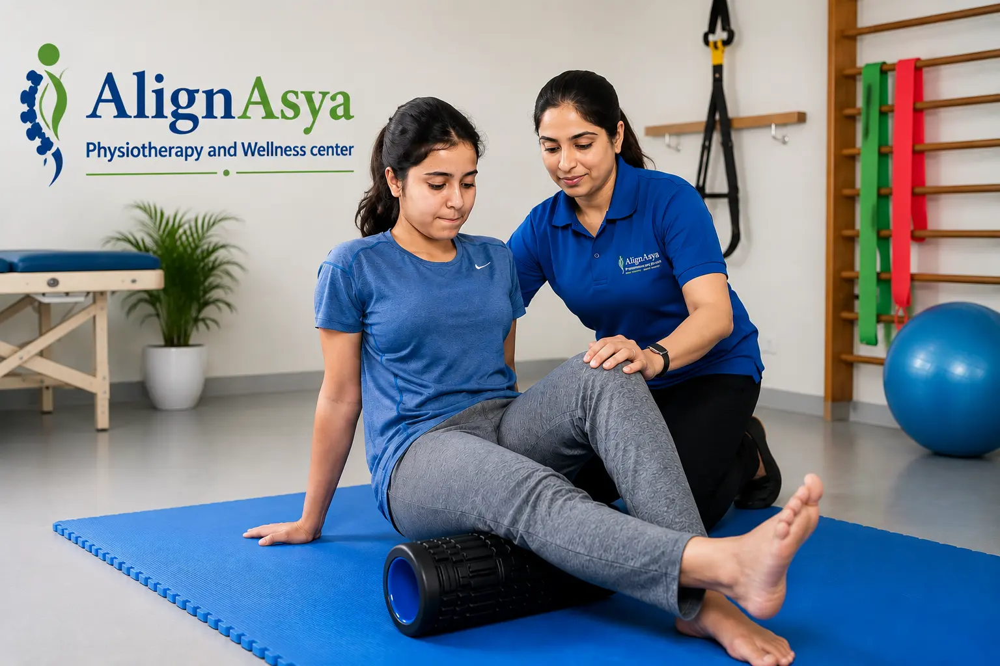

WELLNESS · 9 min read
Best Physiotherapist in Mira Road: Expert Physiotherapy & Rehabilitation at AlignAsya
Looking for professional physiotherapy in Mira Road, Mumbai? Learn how AlignAsya provides personalized physiotherapy, rehabilitation and home-based care for a wide range of conditions.
By AlignAsya Physiotherapy Team · August 2026

Finding the right physiotherapist can make an important difference when you are dealing with pain, stiffness, an injury, reduced mobility or recovery after surgery. If you are searching for the Best physiotherapist in Mira Road, AlignAsya Physiotherapy and Wellness Center provides personalized physiotherapy and rehabilitation designed around your condition, lifestyle and recovery goals.
Located in Mira Road, Mumbai, AlignAsya is led by Dr. Renu Saroj and provides physiotherapy for orthopedic, musculoskeletal, sports, neurological, pediatric, geriatric and women's health needs. Whether you are looking for a Physiotherapist in Mira Road East, a Physiotherapist near me, or specialized rehabilitation services, the focus is on assessment-led treatment, active rehabilitation and long-term improvement.
The goal of physiotherapy is not simply to manage symptoms. It is to help you move better, improve function, build confidence and return to the activities that matter to you.
Why Choose AlignAsya Physiotherapy in Mira Road?
Physiotherapy is more than treating pain temporarily. A good rehabilitation program should identify contributing factors, improve movement, restore strength and help you return to everyday activities safely.
At AlignAsya, treatment plans are personalized following an appropriate assessment. Depending on your condition, physiotherapy may include manual therapy, therapeutic exercises, progressive strengthening, mobility training and other suitable rehabilitation techniques.
Looking for the Best Physiotherapy Clinic in Mira Road East?
If you live in Mira Road East and are searching for the Best physiotherapy clinic in Mira Road East, choosing a clinic with a broad range of rehabilitation services can be helpful.
AlignAsya provides physiotherapy care for conditions involving the spine, muscles, joints, sports injuries, neurological conditions and post-surgical rehabilitation. Specialized services also include pediatric, geriatric, women's health and preventive physiotherapy.
Physiotherapy for Back Pain, Neck Pain and Joint Problems
Back pain, neck pain and joint problems can affect work, exercise, sleep and everyday activities. Symptoms may be associated with muscle weakness, poor posture, repetitive activities, injuries, joint conditions or other contributing factors.
Physiotherapy can focus on improving mobility, strengthening supporting muscles, correcting movement patterns and developing healthier postural habits. AlignAsya provides care for musculoskeletal conditions including back and neck pain, cervical problems, joint pain, stiffness and arthritis-related concerns.
Sports Injury Physiotherapy
Sports injuries require a carefully planned return to activity. Returning to sport too quickly can increase the risk of recurring problems.
AlignAsya provides sports injury rehabilitation with assessment and progressive exercise-based recovery for conditions such as muscle strains, ligament injuries, tendon problems, ankle sprains and shoulder instability. Treatment is tailored to the individual's injury, activity level and recovery goals.
Post Hip and Knee Replacement Rehabilitation
Physiotherapy is an important part of recovery following hip or knee replacement surgery. Rehabilitation may focus on restoring range of motion, rebuilding strength, improving balance and gradually returning to functional activities.
AlignAsya provides structured post-surgical rehabilitation to help patients work toward improved mobility and independence, with progression based on individual recovery and medical guidance.
Neurological Rehabilitation
People recovering from neurological conditions may experience difficulties with walking, balance, coordination, strength or everyday functional activities.
Neurological rehabilitation at AlignAsya can include structured movement, balance and gait training based on individual functional goals. For eligible patients who have difficulty travelling, home-based physiotherapy may also be discussed.
Pediatric Physiotherapy
Children may require physiotherapy support for developmental delays, gait abnormalities, postural problems, cerebral palsy and other congenital or neurological conditions.
AlignAsya offers child-friendly pediatric physiotherapy focused on supporting movement, coordination, balance and functional development, with guidance for parents and caregivers where appropriate.
Women's Health & Antenatal Physiotherapy
Pregnancy brings significant physical changes to the body. Appropriate physiotherapy can help women maintain strength, mobility and physical comfort while preparing for changing functional demands.
AlignAsya provides specialized Women's Health & Antenatal Care with personalized physiotherapy support based on individual needs and stage of pregnancy.
Physiotherapist Mira Road Home Visit
For some patients, travelling to a physiotherapy clinic may not be practical. This can be particularly relevant for older adults with mobility difficulties, patients recovering after surgery, or people with certain neurological conditions.
If you are specifically searching for a Physiotherapist Mira Road home visit, AlignAsya offers domiciliary physiotherapy for eligible patients where travelling to the clinic is difficult. Home-based rehabilitation can be discussed with the clinic according to the patient's condition, requirements and scheduling.
Physiotherapist in Bhayandar East and Physiotherapy Bhayandar West
Residents across the Mira-Bhayandar region often search for a conveniently located physiotherapy center offering comprehensive rehabilitation.
If you are searching for a Physiotherapist in Bhayandar East or Physiotherapy Bhayandar West, AlignAsya in Mira Road provides a convenient option for patients from the surrounding Mira-Bhayandar area.
The clinic's services cover orthopedic and musculoskeletal conditions, sports rehabilitation, neurological rehabilitation, geriatric care, pediatric physiotherapy, women's health and preventive physiotherapy.
Postural and Work-Related Physiotherapy
Long hours at a desk, incorrect workstation setup and repetitive movements can contribute to neck, shoulder and back discomfort. Preventive physiotherapy can help people understand their movement habits and make practical changes.
AlignAsya's preventive-care approach can include posture assessment and correction, ergonomic guidance, movement screening, flexibility and core stability exercises, and injury-prevention strategies.
Manual Therapy and Physiotherapy Techniques
Depending on the assessment, physiotherapy treatment may combine hands-on techniques with active exercise. AlignAsya offers manual therapy approaches such as joint mobilization, soft-tissue techniques and myofascial release when appropriate.
Other modalities such as dry needling, kinesio taping and cupping may also be used selectively as part of a broader physiotherapy program.
One of the Best Physiotherapy Doctors in Mira-Bhayandar
When choosing a physiotherapist, it is useful to look beyond a simple search for “physiotherapist near me.” Consider the physiotherapist's qualifications, experience, treatment approach, range of services and whether the clinic provides a personalized rehabilitation plan.
At AlignAsya, Dr. Renu Saroj leads patient-centered physiotherapy care with a focus on musculoskeletal and sports rehabilitation, alongside specialized services across several areas of physiotherapy.
For patients searching for One of the best physiotherapy doctors in Mira-Bhayandar, AlignAsya aims to provide professional, personalized and compassionate care focused on helping patients move better and regain confidence in everyday activities.
Best Physiotherapist in Mira Road, Mumbai — Take the Next Step
Whether you are experiencing back pain, neck pain, joint stiffness, a sports injury, mobility problems or are recovering after surgery, the right physiotherapy program can help you work toward improved movement and function.
If you are searching for the Best Physiotherapist in Mira Road, Mumbai, Best physiotherapist in Mira Road, Physiotherapist in Mira Road East, or the Best physiotherapy clinic in Mira Road East, AlignAsya Physiotherapy and Wellness Center offers comprehensive physiotherapy and rehabilitation services for children, adults, athletes and older adults.
Take the first step toward better movement and a more active life.
Ready to move better and feel better?
Connect with the AlignAsya team to discuss your physiotherapy needs and find the right next step.
Book an AppointmentThis article is for general education and is not a substitute for individualized medical assessment or treatment.
← Back to all articles